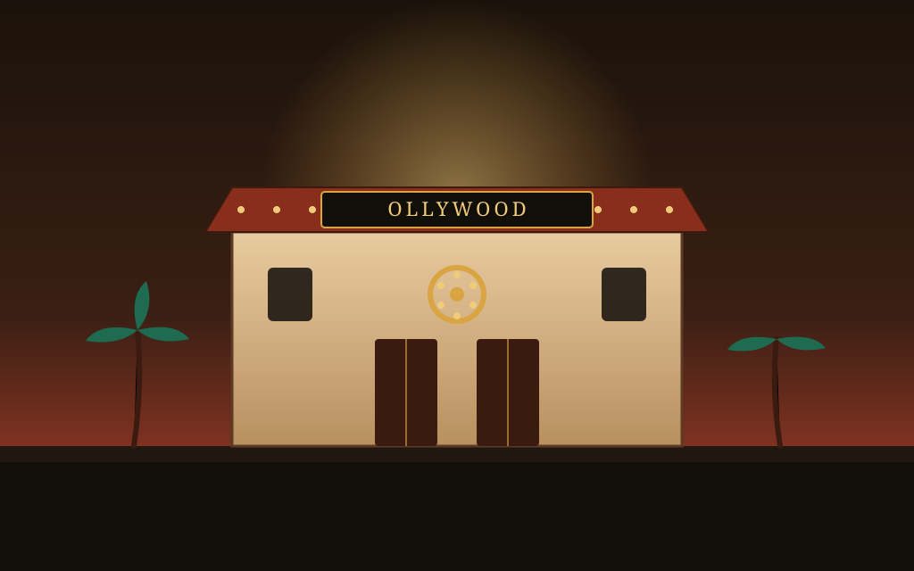
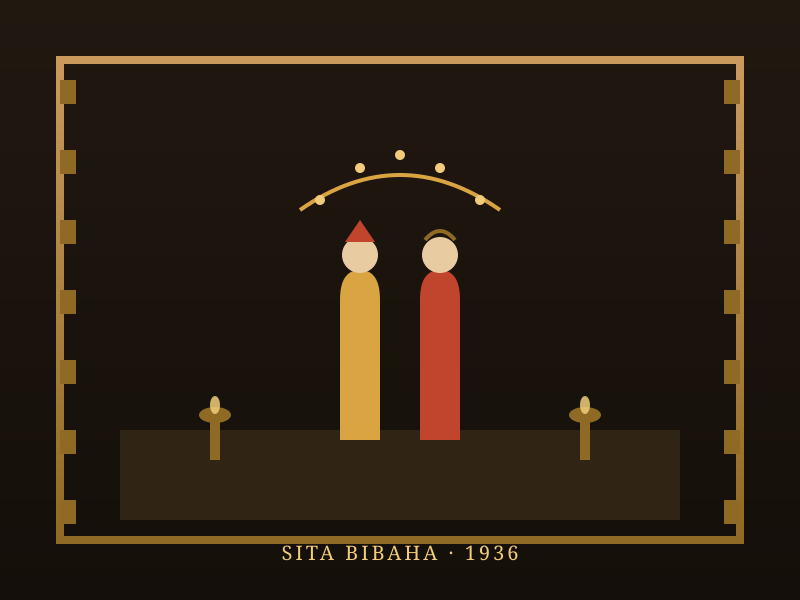

Ollywood Explorer
Step into Odia cinema, born on a single reel of celluloid in 1936. From a mythological love story shot on borrowed money to National Award-winning art house classics, discover the films and artists behind Odisha's own "Ollywood".
From Sita Bibaha to a State Film Industry
Odia cinema began on 28 April 1936, when "Sita Bibaha" — a mythological retelling of Sita and Rama's wedding — opened at Laxmi Talkies in Puri. Directed, produced and partly acted in by Mohan Sundar Deb Goswami, who sold his own land to fund it, the film was made on a shoestring budget of around ₹30,000 with fourteen songs sung entirely by Odisha-based singers.
Growth was slow at first: only two more Odia films were made in the fifteen years after Sita Bibaha. It was not until 1974 that the Odisha government formally recognised filmmaking as an industry, followed in 1976 by the founding of the Odisha Film Development Corporation in Cuttack — the moment "Ollywood", a blend of "Odisha" and "Hollywood", truly came into its own.
🎞️ At a Glance
- First film: Sita Bibaha (1936), directed by Mohan Sundar Deb Goswami.
- Industry hub: Cuttack and Bhubaneswar, Odisha.
- Name origin: "Ollywood" — a portmanteau of Odisha and Hollywood.
- Formal recognition: 1974–1976, with the founding of the Odisha Film Development Corporation.
Notable Films of Ollywood
The films that marked Odia cinema's biggest milestones, from its founding reel to its national and international acclaim.
Sita Bibaha (1936)
The first Odia film, a mythological drama on the marriage of Sita and Rama, screened first at Laxmi Talkies, Puri.
Sri Lokanath (1960)
Directed by Prafulla Kumar Sengupta, it won the first-ever National Award (President's Silver Medal) for Best Feature Film in Odia.
Sita Rati (1982)
Winner of the National Film Award for Best Feature Film in Oriya, praised for its portrayal of rural struggles and social inequities.
Maya Miriga (1984)
Nirad N. Mohapatra's landmark family drama won the National Award for Second Best Feature Film and screened at Cannes' Critics' Week.
Magunira Shagada (2002)
Directed by Prafulla Mohanty, this National Film Development Corporation production won the National Award for Best Feature Film in Odia.
Hisab Nikas (1981)
Directed by Prashanta Nanda, a socially themed drama exploring justice and familial bonds that drew audiences back to cinema halls.
🏆 Voices Behind the Camera
- Mohan Sundar Deb Goswami: Founding father of Odia cinema, director-producer of Sita Bibaha.
- Prasanta Nanda: Actor, director, lyricist and screenwriter — one of Ollywood's most versatile figures.
- Nirad N. Mohapatra: Director of Maya Miriga, celebrated at Cannes and international festivals.
- Manmohan Mohapatra: Director whose "Sitarati" was Odisha's first entry to the Indian Panorama in 1983.
Award-Winning Artists of Ollywood
Mohan Sundar Deb Goswami, a prominent figure in Rasa Leela performance and founder of the Annapurna Theatre, directed, produced and starred in Sita Bibaha, laying the foundation for everything that followed. Decades later, Prasanta Nanda emerged as Ollywood's most versatile talent — acting, writing, composing lyrics and directing across a long career that shaped the industry's popular voice.
The 1980s brought Odia cinema its widest recognition, led by Nirad N. Mohapatra, whose 1984 film Maya Miriga won a National Award for Second Best Feature Film, screened in Cannes' Critics' Week, and picked up honours at festivals in Germany and Hawaii. Alongside him, Manmohan Mohapatra became the first Odia director selected for the Indian Panorama, cementing Ollywood's place on the national stage.
Chronology of Odia Cinema
From a single mythological drama to a recognised state film industry.
Sita Bibaha Releases
Odia cinema's first film opens at Laxmi Talkies, Puri, on 28 April — a date still marked as the birthday of the Odia film industry.
A Slow Beginning
Only two more Odia films are produced in the fifteen years following Sita Bibaha, as the fledgling industry struggles to find its footing.
First National Recognition
"Sri Lokanath" wins the first National Award for Best Feature Film in Odia, putting the industry on the national map.
Ollywood is Born
Odisha declares filmmaking an official industry in 1974, and founds the Odisha Film Development Corporation in Cuttack in 1976.
Maya Miriga's Global Acclaim
Nirad N. Mohapatra's family drama wins a National Award and international honours, screening at Cannes' Critics' Week.
A Continuing Legacy
Ollywood continues producing National Award winners like "Magunira Shagada" (2002) alongside a thriving commercial industry.
Reels, Awards & the Marquee of Ollywood
Illustrated impressions of the halls, honours and craft behind nearly nine decades of Odia cinema.


📚 References & Further Reading
- National Film Development Corporation of India. National Film Award for Best Odia Feature Film — Award History.
- Odisha Bytes (2020). First Odia Film 'Sita Bibaha' Completes 84 Years Today.
- Cinemaazi. Nirad Mohapatra — Director Biography, Films and Legacy.
- OdishaPlus (2019). Odia Film Scenario: The Past and the Future Possible.
- Odisha Film Development Corporation, Cuttack. Institutional History and Mandate.